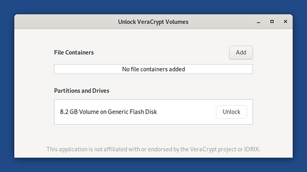
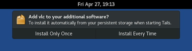
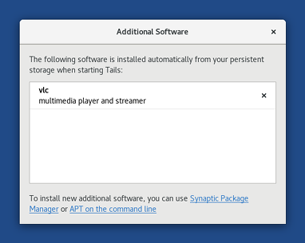
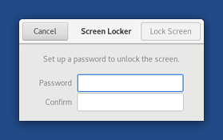

On October 12, we started our yearly donation campaign. Today, we summarize what we achieved with your help in 2018 and renew our call for donations.
New features
We integrated VeraCrypt in the desktop to allow you to work with encrypted files across different operating systems (Windows, Linux, and macOS).

This work was done upstream in GNOME and will be available outside of Tails in Debian 10 (Buster) and Ubuntu 18.10 (Cosmic Cuttlefish).
Additional Software allows you to install additional software automatically when starting Tails.


We added a screen locker to give you some protection if you leave your Tails unattended, willingly or not.

We completely redesigned our download page and verification extension to make it easier to get and verify Tails. It is also now possible to verify Tails from Chrome.
Adoption
Tails was used approximately 22 000 times a day.
We did more usability work than ever before. Every new feature was tested with actual users to make sure Tails becomes easier to use.
We answered 1123 bug reports through our help desk and helped all these people to be safer online.
Under the hood
We released 11 new versions of Tails to continue offering improvements and security fixes as soon as possible, including 4 emergency releases. This year we've faced critical security issues like Spectre, Meltdown, EFAIL, and issues in Firefox and are working hard to always have your back covered!
We made the build of Tails completely reproducible, which brings even more trust in the ISO images that we are distributing, a faster release process, and slightly smaller upgrades.
We greatly diversified our sources of income. Thanks to all of you, the share of donations that we got from individuals increased from 17% to 34%. This made our organization more robust and independent.
Community
We published a social contract to clarify the social commitments that we stand by as Tails contributors.
We attended 12 conferences and connected to free software and Internet freedom communities in 8 different countries, including Chaos Computer Congress (Germany), FOSDEM (Belgium), Internet Freedom Festival (Spain), Tor Meeting (Italy and Mexico), Debian Conference (Taiwan), and CryptoRave (Brazil).
We grew our pool of regular contractors with 4 new workers, mostly to work on our core code and infrastructure. These include several very skilled Debian developers.
All of this is made possible by donations from people like you. And because they help us to plan our work, we particularly appreciate monthly and yearly donations, even the smallest ones.
If you liked our work in 2018, please take a minute to donate and make us thrive in 2019!